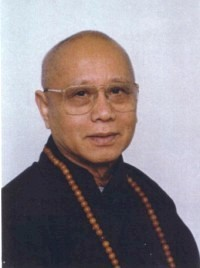
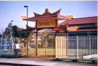

| Trang gốc |
Trang web BuddhaSasana |
Unicode Times font |
|
CÂY
GIÁC NGỘ Tiến
sĩ Peter Della Santina Vài nét về Tác giả Tiến sĩ Peter Della Santina sinh trưởng tại Hoa Kỳ. Ông đã bỏ nhiều năm nghiên cứu và dạy tại Ðông Nam Á Châu. Ông đậu cử nhân về tôn giáo tại Ðại Học Wesleyan, Middgletown, Connecticut năm 1972 và thạc sĩ về triết học tai Ðại Học New Delhi hai năm sau. Ông đậu tiến sĩ vế Phật Học cũng tại Ðại Học New Delhi, Ấn Ðộ năm 1979. Ông làm việc ba năm tại Viện Nghiên Cứu Cấp Cao về Tôn Giáo Thế Giới, Fort Lee, New Jersey với tư cách là một học giả nghiên cứu phiên dịch những kinh điển triết học Phật Giáo Tây Tạng thế kỷ thứ Tám. Ông dạy tại một số trường Ðại Học và Trung Tâm Phật Giáo tại Âu Châu, và Á Châu, như Ðại Học Pisa tại Ý, Ðại Học Quốc Gia tại Singapore và Viện Tibet House ở Delhi Ấn Ðộ. Ông là phối hợp viên của chương trình Phật Học tại Viện Phát Triển Chương Trình Giảng Dạy tại Singapore, thuộc Bộ Giáo Dục từ năm 1983 tới năm 1985. Mới đây ông là thành viên cao cấp tại Viện Nghiên Cứu Cấp Cao Simla, Ấn Ðộ và dạy triết tại Hàn Lâm Viện Fo Kuang Shan về Phật Giáo Trung Hoa tại Kaoh-shiung, Ðài Loan. Trong hai mươi lăm năm, ông là học trò của Ðức Sakya Trizin, nhà lãnh đạo dòng tu Sakya của Phật Giáo Tây Tạng, một dòng tu nổi tiếng của truyền thống Sakya. Ông đã tu tập hành thiền và đã hoàn tất một số nhập thất. Ông đã xuất bản một số sách và những bài viết có tính cách học thuật gồm có "Thư của Nagarjuna (Long Thọ) gửi Hoàng Ðế Gautamiputra", tại Delhi năm 1978 và 1982, và "Các Trường Phái Madhyamaka tại Ấn Ðộ" tại Delhi năm 1986, "Madhyamaka và Triết Lý Tây Phuơng Hiện Ðại", nhà xuất bản Triết Lý Ðông và Tây, Hawaii, năm 1986. -ooOoo- Vài nét về Thượng Tọa Thích Tâm Quang THÂN THẾ Thượng tọa có thế danh là Nguyễn Hữu Vũ, pháp danh Minh Phát, và pháp tự là Thích Tâm Quang, thuộc dòng Lâm Tế Chánh Tông thứ 45. Thầy sinh năm Giáp Tý (1924), nguyên quán ở Quận Hoàn Long, Hà Nội, là con trai trưởng trong một gia đình có sáu anh chị em, gồm ba trai ba gái. Sinh trưởng trong một gia đình nề nếp theo đạo Phật, ngay từ thuở bé đã theo bố mẹ đi chùa lễ bái cúng Phật thường xuyên vào những ngày Rằm và mồng Một mỗi tháng. Lớn lên, Thầy theo học chương trình Pháp văn nên rất thông thạo tiếng Pháp. Thầy cùng gia đình di cư vào miền Nam năm 1955; tham gia quân đội, phục vụ Cục Mãi Dịch và là sĩ quan đại diện Phật Giáo của Cục này. Năm 1965, giải ngũ với cấp bậc Đại Úy. Sau đó, Thầy làm việc cho một cơ quan Hoa Kỳ tại Sài Gòn. Nhờ đó, Thầy được trau dồi thêm khả năng phiên dịch Anh ngữ. Năm 1975, Thầy cùng gia đình sang định cư tại Hoa Kỳ, ở Quận hạt Fresno, Tiểu bang California. Vừa đến Fresno là Thầy được nhận vào làm việc với cơ quan tài chánh quận này cho đến ngày về hưu trí năm 1987. Nhờ duyên lành, Thầy được gặp Hòa thượng Thích Đức Niệm năm 1979, và được Hòa thượng dìu dắt học Phật và làm Phật sự tại đây. Sau thời gian tu tập và làm Phật sự gần một năm, Hòa thượng Thích Đức Niệm nhận thấy Thầy đã có cơ duyên với Phật Pháp nên hướng dẫn cho quy y Tam Bảo, với pháp danh là Minh Phát. CÔNG TÁC PHẬT SỰ Nhờ có tâm thành với Phật Pháp, lại được sự dìu dắt ân cần của Hòa thượng Bổn Sư, nên Thầy đã cùng với một số Phật tử tại quận hạt Fresno mua được một ngôi nhà cũ nhỏ để cải gia vi tự với tên là Chùa Tam Bảo. Khi còn là Phật tử tại gia, Thầy rất cần mẫn và nhiệt thành với Phật sự trong cương vị Hội Trưởng Hội Phật Giáo Việt Nam vùng Central Valley, California. Vì không có trụ trì nên ban ngày thì đi làm, tối về ngủ luôn tại chùa, lo kinh kệ và hương đèn sớm hôm cúng Phật như một vị hộ tự. Người Việt định cư tại đấy đều mến mộ. Nhờ đó, ngôi chùa Tam Bảo ngày càng vững mạnh thêm. Sau khi nghĩ hưu, Thầy đích thân đến Phật Học Viện Quốc Tế, đảnh lễ Hòa thượng Bổn Sư và xin được xuất gia đầu Phật. Tháng Sáu năm 1988, bổn sư nhận thấy có khả năng kham lãnh giới pháp nên cho phép đăng đàn thọ giới Cụ túc và Bồ Tát giới cùng một lần. Hòa thượng Thích Đức Niệm làm Đàn Đầu truyền giới, Hòa thượng Thích Trí Chơn làm Yết Ma A xa lê sư, và Thượng tọa Thích Tín Nghĩa làm Giáo Thọ A xà lê sư. Sau khi đắc giới, bổn sư cho trở lại Chùa Tam Bảo, vừa để trông coi ngôi già lam vừa cấm túc ba tháng tụng kinh và lạy Hồng Danh Bảo Sám. Mãn hạ, lại trở lại Phật Học Viện để đảnh lễ Bổn Sư và Đại Chúng là đã làm tròn bổn phận một phần nào trong sự bái sám theo sự chỉ dẫn của bổn sư. Kể từ khi phát tâm xuất gia, cầu thọ giới pháp, Thầy không lúc nào là không để tâm cho Phật Pháp, từ những việc của Chùa Tam Bảo, Fresno, cho đến những đóng góp khiêm tốn theo hạnh nguyện của Thầy với Giáo Hội. Đầu năm 1995, Thầy phát động xây cất chùa mới. Ngôi chùa Tam Bảo thật sự đã hình thành. Chùa Tam Bảo mới nầy được xây cất tuy không to lớn đồ sộ nguy nga, nhưng khang trang và đẹp đẽ, hợp pháp nơi xứ người, với những nét đặc thù văn hóa Việt Nam và Phật Giáo. Trong khuôn viên chùa, còn có Ngôi Bảo Tháp bảy tầng để thờ xá lợi Phật và Đài Quán Thế Âm lộ thiên. Ngôi già lam này không những chỉ đáp ứng cho nhu cầu Phật Sự tại địa phương mà còn là một di tích lịch sử quý giá về việc hoằng pháp lợi sanh trong tương lai cho đàn hậu tấn ở xứ người. Đây là một thành quả đáng kể và xứng đáng với hạnh nguyện xuất gia của Thượng tọa Tâm Quang. HOẠT ĐỘNG VĂN HÓASong song với công tác Phật Sự, như lo xây cất Ngôi Bảo Điện, Tháp thờ Xá Lợi, Đài Quán Âm Lộ Thiên, v.v..., Thượng tọa còn dấn thân vào công tác Phật Sự của Giáo Hội Phật Giáo Việt Nam Thống Nhất tại Hoa Kỳ. Ngoài nhiệm vụ Phụ Tá Đặc Biệt của Hòa thượng Thích Đức Niệm, Chánh Văn Phòng Hội Đồng Đại Diện, Thượng tọa Tâm Quang còn dành ra một số thời gian rất lớn cho các hoạt động văn hóa, nhất là về mặt dịch thuật kinh sách. Thầy chú tâm vào công tác dịch thuật những tác phẩm nổi tiếng của các bậc cao tăng chơn tu. Đa phần những dịch phẩm đều có dạng song ngữ Anh-Việt. Phần chuyển ngữ từ Anh Văn sang Việt Văn:
Phần Song Ngữ Anh-Việt:
Với hạnh nguyện, sự tu tập hành trì giới luật, và công tác Phật sự đã và đang đóng góp, vào tháng 9 năm 1998, Thầy được bổn sư tấn phong lên hàng Thượng Tọa trong Đại Hội Thường Niên Năm Thứ Hai, nhiệm Kỳ Hai, tại Tổ Đình Từ Đàm Hải Ngoại. Thượng tọa đã được chư tôn giáo phẩm tán dương và hoan hỷ. Theo lời của Thượng tọa Thích Tín Nghĩa:
Bình Anson ghi chép, -ooOoo- Ðầu trang | Mục lục | 1.1 | 1.2 | 1.3 | 1.4 | 2.1 | 2.2 | 3.1 | 3.2 | 4.1 | 4.2 | 5.0 |
Chân thành cám ơn Thượng tọa Thích Tâm Quang đã gửi tặng bản vi tính (Bình Anson, 05-2003)
[Trở
về trang Thư Mục]
last updated: 20-05-2003